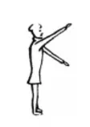

Rune Grimoire
Kenaz
Modern Relevance
Kenaz, connected to fire, represents a torch, light, or sore. It signifies the start of a process, emotional healing, or a fresh endeavor. This rune calls for clearing away what no longer serves to prepare for the future.
Tree, Element, and Deity
Tree: pine
Deity: Heimdall
Meaning: fire, a torch, a beacon
Names Across Dialects
| Dialect | Word | Meaning |
|---|---|---|
| Proto-Germanic | kenaz | Torch |
| Gothic | kusma | Swelling |
| Old English | cén | Torch |
| Old Norse | kaun | Sore, boil |
| Icelandic | Kaun | Sore, boil |
| Norwegian | Kaun | Sore, boil |
Phonetic value: k
Esoteric interpretation: controlled fire, cremation (the Gothic and Old Norse names are secondary, relating to internal fire and inflammation)
Ideographic interpretation: flame of the torch
Cosmological Lore
Kenaz portrays the mystery of regeneration through death or sacrifice. This is the fire rune: fire under human control in the form of the torch, as opposed to the more raw and archetypal power present in Fehu.
Ritually, Kenaz is the fire of creation, sacrifice, the hearth, and the forge. It is fire controlled by humankind toward a willed result. Cremation as a funeral rite facilitates the transference of the psychic aspects of the psychosomatic complex to new and regenerated forms, preventing their return to spent forms. The fire of sacrifice transforms and makes the flesh of the offering sacred and acceptable for consumption by mortals and gods alike. Fire is always viewed as a transforming and regenerating force.
The Human Rune
Kenaz is the ability and the will to generate and create. It is the rune of the artist and the craftsman, and of the technical aspects of magick. The controlled power of the psyche is combined with the controlled energy of nature, and this results in a crafted object. This is the "human rune," the rune of humankind.
A great body of knowledge and technical lore is embodied in the K-rune: knowledge combined with ability. The mystery of creating a third thing from the combination of two is also an aspect of Kenaz. Opposites are bound together in an aesthetic fashion, and the results of that union are brought into manifestation.
Passion, Kin, and Freyja
The K-rune is the rune of human passion, lust, and sexual love as positive attributes. This is the emotional root of creativity in all realms of action. The goddess Freyja finds many correspondences with this aspect of the rune.
Kenaz also connects to the concept of kin, and especially to the part of clanic tradition that maintains a unity between the living and dead members of a clan, existing together in a syncretic form of conscious life force.
Rune Character
Rune of light: the light of the soul, and also intellect. The traveler on the road to the underworld carried Kaun to illuminate and guide. The shape of this rune is of a delta for smooth flight and also penetrating. Magickally this rune can be used for intellect and penetrating things as it carries energy. It also increases awareness and gives insight. This rune also represents sores, inflammations, swelling, and boils.
Used for the control and harnessing of sexual energies and in working sex magick, often used with other fire runes and used to release the spirit into the realms of power. This rune can be used to direct and influence the emotions of others. Bestows charisma, which is connected to the sexual energies. Useful in raising the kundalini.
Crystal Pairings
- Fire Agate and Fire Opal can be used with this rune, especially when working sex magick
Keywords
- Controlled energy
- Ability
- Transformation
- Regeneration
- Will to generate
- Sexual lust
- Creativity
Galdr
kenaz kenaz kenaz
ku ka ki ke ko
kun kan kin ken kon
ok ek ik ak uk
Stadha
Stand upright with the right arm raised at a 45-degree angle, while the left arm is lowered by the same amount. The palm of the right hand faces outward, drawing power, while the fingers of the left hand are pointed, projecting into manifestation.

Magickal Workings
- Strengthening of abilities in all realms
- Creative inspiration
- Higher polarization as a tool of operation
- Operations of regeneration and healing
- Love (especially sexual love)
- Control and harnessing of sexual energies
- Directing and influencing the emotions of others
Constructive Applications
Intellect, awareness, and insight. Control and harnessing of sexual energies. Bestows charisma. Useful in raising the kundalini and releasing the spirit into the realms of power.
Baneful Applications
Used to incite stupidity and works so that the victim will remain unaware.
Stadhagaldr Rites
Increase in Creative Force
Kenaz channels skill, knowledge, and World-wisdom into the vitki:
Skill comes to me
through the might of Kenaz
knowledge and World-wisdom
wax in me through Kenaz.
See Stadhagaldr (Posture Magick) for the full rite.